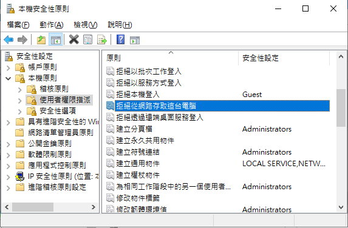
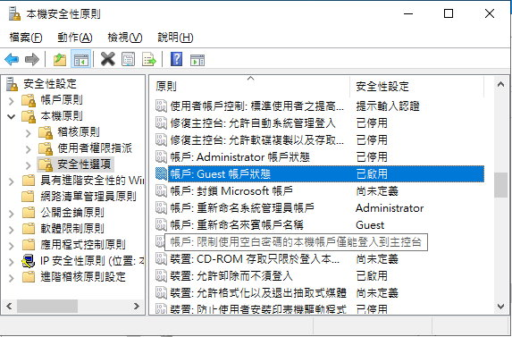
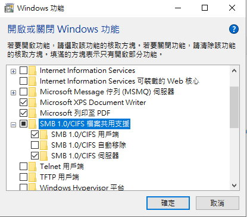
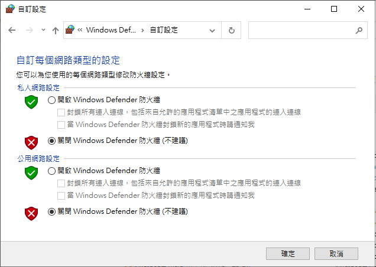
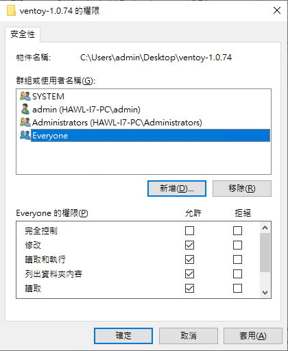
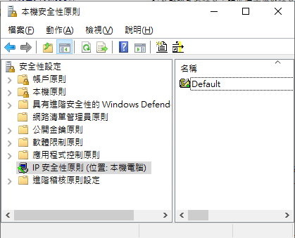
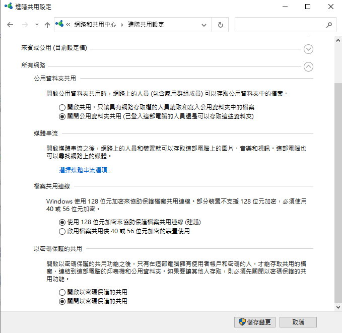

1. 所有控制台項目 \ 系統管理工具 \ 本機安全性原則<註1> \ 安全性 \ 本機原則 \ 使用者權限指派 \ 拒絕從網路存取這台電腦 ：
移除 Guest ，使 此項目為空。

2. 所有控制台項目 \ 系統管理工具 \ 本機安全性原則<註1> \ 安全性 \ 本機原則 \ 安全性選項 \ 帳號：Guest 帳戶狀態 ：
已啟用。

3. 所有控制台項目 \ 程式和功能 \ 開啟或關閉 Windows 功能 \ SMB 1.0/CIFS 檔案共用資源<註2>：
勾選 用戶端、伺服器。
不勾選 自動移除 。

4. 所有控制台項目 \ Windows Defender 防火牆：
允許SAMBA連線，或者關閉防火牆功能。

5. 分享之資料夾的安全性：
允許 Everyone 讀，或者 允許 Everyone 讀寫。

6.確保 IPSEC服務 或者 第三方防毒軟體、第三方防火牆阻擋網路芳齡伺服器服務。

7. 所有控制台項目 \ 網路和網際網路 \ 網路和共用中心 \ 進階共用設定 \ 所有網路 \ 以密碼保護的共用：
關閉以密碼保護的共用
